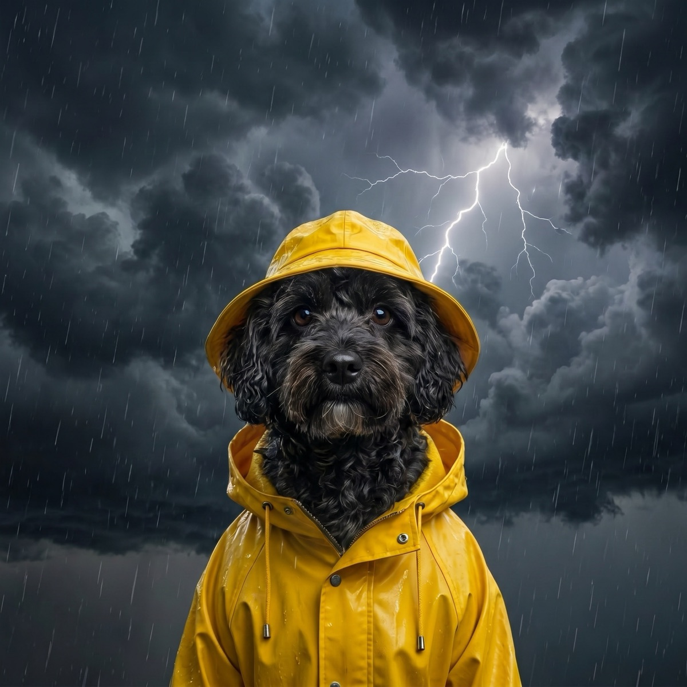

Thunderstorm Anxiety in Dogs: How to Calm the Panic
If your dog turns into a shaking, pacing, panting mess the moment the sky rumbles, you are not alone. Thunderstorm anxiety is one of the most common fears in dogs, and the good news is that there is a lot you can do to take the edge off, especially when you see the storm coming.
Storm season can be miserable for an anxious dog and for the person who loves them. The pacing, the hiding behind the toilet, the frantic clawing at the back door: it all comes from real fear, not bad behavior. Once you understand what is setting your dog off and how to respond, you can turn a night of panic into something far more manageable.
The signs of storm anxiety
Storm fear shows up differently from dog to dog, but the tells are usually easy to spot once you know them:
- Trembling or shaking, even when the room is warm
- Pacing, restlessness, or clinginess, following you from room to room
- Panting and drooling with no exercise to explain it
- Hiding in a closet, under a bed, or in the bathroom
- Whining, barking, or howling at the thunder
- Destructive behavior or trying to escape through doors and windows
Mild cases might be a little clinginess. Severe cases can mean a dog who hurts themselves trying to dig through a wall. Knowing where your dog falls helps you decide how far to take the steps below.
Why storms scare dogs so much
It is rarely just the noise. A thunderstorm hits your dog as a wall of overlapping triggers, and according to the American Kennel Club, several of them are things we cannot even perceive:
- Sound. A dog's hearing is far sharper than ours, so they often register distant thunder long before we do. The booms are louder and more startling to them.
- Barometric pressure. Dogs are sensitive to the drop in air pressure that rolls in ahead of a storm, which is part of why your dog may grow anxious before the first clap.
- Static electricity. Storms build up static charge, and some experts believe dogs feel that buildup in their coats, which adds another layer of unease.
On top of all that, the instinct to flee loud, threatening sounds and seek shelter runs deep. Your dog is not being dramatic. Their body is telling them something dangerous is coming.

Build a safe space before the storm
The single most helpful thing you can offer an anxious dog is a den: a small, dark, covered spot where the world feels far away. The AKC suggests a crate or a quiet closet works well, because the snug walls keep anything from sneaking up on them. Set it up with their bed and a favorite toy, and never lock them in or force them out; the space only works if it feels like their choice.
To dial down the storm itself, close the windows and curtains to mute the flashes and the sound, then add a layer of cover noise. The AKC recommends white noise or calming classical music to blur the thunder. A high-value distraction helps too: a lick mat smeared with peanut butter or a stuffed Kong gives your dog something soothing to focus on instead of the sky.
Anxiety wraps and calming aids
Plenty of owners swear by snug anxiety wraps, sometimes called pressure vests, that apply gentle, constant pressure around the body a bit like swaddling a baby. The ASPCA notes these can take the edge off for some dogs, and if you do not own one, a snugly fitting t-shirt can do in a pinch. Pheromone diffusers, calming treats, and vet-recommended supplements are other low-risk options worth trying. None of these are magic, but stacked together they can move a dog from full panic to merely nervous.
Desensitization and counterconditioning
For longer-term progress, behavior experts lean on two techniques. Desensitization means playing storm sounds at a very low volume while your dog stays relaxed, then raising the volume in tiny steps over many sessions so the noise slowly loses its punch. Counterconditioning pairs those sounds with great things, like treats or play, so your dog starts to associate the rumble with good outcomes instead of dread. The two work best together and take patience, but they address the fear at its root rather than just managing the moment.
One rule matters above all: never punish a frightened dog. Scolding the whining or the hiding only deepens the fear and teaches your dog that storms bring trouble from you too.
When to talk to your vet
If your dog's panic is severe, or if it is getting worse season after season, loop in your veterinarian. The ASPCA warns that storm phobias can intensify over time, so this is not something to simply wait out. A vet or veterinary behaviorist can rule out other issues and may prescribe anti-anxiety medication to use alongside training. Given before a storm, the right medication can keep your dog calm enough that the behavior work actually has a chance to stick.
The quiet advantage of seeing it coming
Here is the part most anxiety advice skips: timing. Every one of these tactics, the den, the music, the lick mat, the wrap, the medication, works far better when it is in place before the first thunderclap, not scrambled together mid-panic. A dog who is already settled in their safe space rides out a storm a world better than one you are trying to soothe after the fear has already spiked.
That is exactly where keeping an eye on the forecast earns its keep. With WeatherPets, your own dog delivers a morning report that can flag an incoming storm, giving you a calm head start to set up the safe space, prep the treats, and dose any medication on schedule. It is a small daily habit that turns a stressful surprise into something you saw coming. If you want a forecast you will actually check, a weather app built for dog owners makes the whole routine easier to keep.
Gear that helps: for some dogs, a snug anxiety wrap like the ThunderShirt takes the edge off a storm. We compare the leading options in the best anxiety wraps for storm-scared dogs.
WeatherPets is an Amazon Associate and may earn from qualifying purchases, at no extra cost to you.
Frequently asked questions
Why is my dog scared of thunderstorms?
Storms hit dogs as a wall of overlapping triggers: thunder sounds louder and more startling to their sharper hearing, they sense the drop in barometric pressure that rolls in ahead of a storm, and some experts believe they feel static electricity building in their coats. Add a deep instinct to flee loud, threatening sounds and the fear is very real, not bad behavior.
Do ThunderShirts actually work?
They help some dogs. Snug anxiety wraps like the ThunderShirt apply gentle, constant pressure around the body, a bit like swaddling a baby, and the ASPCA notes they can take the edge off for some dogs (a snugly fitting t-shirt can do in a pinch). No single aid is magic, but stacked with a safe space, cover noise, and a good distraction, a wrap can move a dog from full panic to merely nervous.
How do I calm my dog during a thunderstorm?
Give them a den: a small, dark, covered spot like a crate or quiet closet with their bed and a favorite toy, never locked or forced. Close the windows and curtains, add white noise or calming music to blur the thunder, and offer a high-value distraction like a stuffed Kong or a peanut butter lick mat. Never punish a frightened dog, since scolding only deepens the fear.
Can a vet prescribe medication for storm anxiety in dogs?
Yes. If your dog's panic is severe or getting worse season after season, a vet or veterinary behaviorist can rule out other issues and may prescribe anti-anxiety medication to use alongside training. Storm phobias can intensify over time, and the right medication given before a storm can keep your dog calm enough for the behavior work to actually stick.